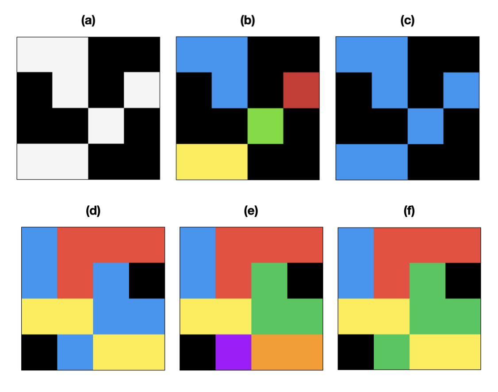
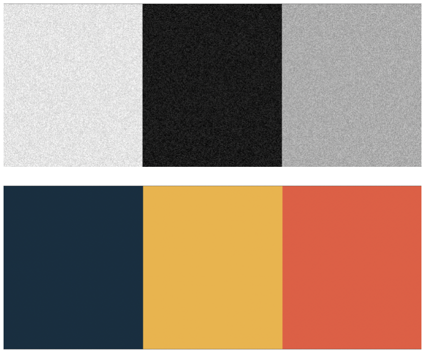

cc3d: Connected Components on Multilabel 3D Images

Fig. 1. Binary and Multilabel Connected Components Labeling (CCL) 2D images are shown for simplicity. Black is the background color (zero). (a) A binary image (foreground white, background black) (b) 4-connected CCL of binary image (c) 8-connected CCL of binary image (d) A multilabel image (e) 4-connected CCL of multilabel image (f) 8-connected CCL of multilabel image.

Fig. 2. Continuous Value Connected Components Labeling (CCL) (top) A three tone grayscale image with signed additive low magnitude noise (bottom) Extracted components using continuous value CCL with a delta value greater than the noise magnitude but smaller than the difference between tones
cc3d is an implementation of connected components in three dimensions using a 26, 18, or 6-connected neighborhood in 3D or 4 and 8-connected in 2D. This package uses a 3D variant of the two pass method by Rosenfeld and Pflatz augmented with Union-Find and a decision tree based on the 2D 8-connected work of Wu, Otoo, and Suzuki. This implementation is compatible with images containing many different labels, not just binary images. It also supports continuously valued images such as grayscale microscope images with an algorithm that joins together nearby values.
I wrote this package because I was working on densely labeled 3D biomedical images of brain tissue (e.g. 512x512x512 voxels). Other off the shelf implementations I reviewed were limited to binary images. This rendered these other packages too slow for my use case as it required masking each label and running the connected components algorithm once each time. For reference, there are often between hundreds to thousands of labels in a given volume. The benefit of this package is that it labels all connected components in one shot, improving performance by one or more orders of magnitude.
In general, binary images are much more common (usually resulting from image thresholding), but multi-label images crop up in instance segmentation and semantic labeling as a classifier may label touching clusters of adjacent pixels differently. If a gap between different labels is guaranteed, then the problem degenerates into the binary version.
Check out benchmarks to see a comparison with SciPy on a few different tasks.
Python pip Installaction
If compatible binaries are available for your platform, installation is particularly simple.
If compatible binaries are not available, you can install from source as follows.
Requires a C++ compiler.
Occasionally, you may appear to successfully install cc3d, but on import you'll see an error that includes: numpy.ufunc size changed, may indicate binary incompatibility. You can either try upgrading numpy or compiling cc3d from source in this case.
Python Manual Installation
Requires a C++ compiler.
Python Use
For detailed documentation, see the API docs.
The following functions are available with examples below:
- Connected Component Labeling (CCL)
- Calculating centroids, bounding boxes, and voxel counts
- Removal of small objects ("dust") (or large objects)
- Extraction of k largest objects
- Fast extraction of all objects one-by-one
- Calculation of contact surface area and contact network
- Extraction and coloring of a per voxel connectivity graph
import cc3d
import numpy as np
labels_in = np.ones((512, 512, 512), dtype=np.int32)
labels_out = cc3d.connected_components(labels_in) # 26-connected
connectivity = 6 # only 4,8 (2D) and 26, 18, and 6 (3D) are allowed
labels_out = cc3d.connected_components(labels_in, connectivity=connectivity)
# By default, cc3d works on multivalued labelings, but sometimes you want
# to treat a grayscale image as a binary image directly. It is also possible
# to process binary images more effectively. Binary image specific optimizations
# are not implemented yet though, but may be in the future.
labels_out = cc3d.connected_components(labels_in, binary_image=True)
# same as above, but less efficient
labels_out = cc3d.connected_components(labels_in > 0)
# If you need the borders to wrap around (e.g. for simulations, world maps)
# specify periodic_boundary=True, currently only supported for
# 4 and 8 (2d) and 6 (3d) connectivities.
labels_out = cc3d.connected_components(
labels_in, connectivity=connectivity, periodic_boundary=True
)
# If you need a particular dtype you can specify np.uint16, np.uint32, or np.uint64
# You can go bigger, not smaller, than the default which is selected
# to be the smallest that can be safely used. This can save you the copy
# operation needed by labels_out.astype(...).
labels_out = cc3d.connected_components(labels_in, out_dtype=np.uint64)
# If you're working with continuously valued images like microscopy
# images you can use cc3d to perform a very rough segmentation.
# If delta = 0, standard high speed processing. If delta > 0, then
# neighbor voxel values <= delta are considered the same component.
# The algorithm can be 2-10x slower though. Zero is considered
# background and will not join to any other voxel.
labels_out = cc3d.connected_components(labels_in, delta=10)
# If you're working with an image that's larger than memory you can
# use mmapped files. The input and output files can be used independently.
# In this case an array labels.bin that is 5000x5000x2000 voxels and uint32_t
# in Fortran order is computed and the results are written to out.bin in Fortran
# order. You can find the properties of the file (shape, dtype, order) by inspecting
# labels_out.
labels_in = np.memmap("labels.bin", order="F", dtype=np.uint32, shape=(5000, 5000, 2000))
labels_out = cc3d.connected_components(labels_in, out_file="out.bin")
# Here's another strategy that you can use for huge files that won't even
# take up any disk space. Provide any iterator to this function that produces
# thick z sections of the input array that are in sequential order.
# The output is a highly compressed CrackleArray that is still random access.
# See: https://github.com/seung-lab/crackle
# You need to pip install connected-components-3d[stack] to get the extra modules.
def sections(labels_in):
"""
A generator that produces thick Z slices
of an image
"""
for z in range(0, labels_in.shape[2], 100):
yield labels_in[:,:,z:z+100]
# You can access compressed_labels_out using array notation
compressed_labels_out = cc3d.connected_components_stack(sections(labels))
# convert to numpy array, probably a big mistake since
# you probably expected it was going to blow up RAM
cc_labels = compressed_labels_out.numpy()
# if you don't like hanging onto this exotic format, you
# can write it as a numpy array to disk in a memory efficient way.
compressed_labels_out.save("example.npy.gz")
# or hang onto it
compressed_labels_out.save("example.ckl")
# You can extract the number of labels (which is also the maximum
# label value) like so:
labels_out, N = cc3d.connected_components(labels_in, return_N=True) # free
# -- OR --
labels_out = cc3d.connected_components(labels_in)
N = np.max(labels_out) # costs a full read
# You can extract individual components using numpy operators
# This approach is slow, but makes a mutable copy.
for segid in range(1, N+1):
extracted_image = labels_out * (labels_out == segid)
process(extracted_image) # stand in for whatever you'd like to do
# If a read-only image is ok, this approach is MUCH faster
# if the image has many contiguous regions. A random image
# can be slower. binary=True yields binary images instead
# of numbered images.
for label, image in cc3d.each(labels_out, binary=False, in_place=True):
process(image) # stand in for whatever you'd like to do
# Image statistics like voxel counts, bounding boxes, and centroids.
stats = cc3d.statistics(labels_out)
# Remove dust from the input image. Removes objects with
# fewer than `threshold` voxels.
labels_out = cc3d.dust(
labels_in, threshold=100,
connectivity=26, in_place=False
)
# Removes objects with >= `threshold` voxels.
labels_out = cc3d.dust(labels_in, threshold=100, invert=True)
# Removes objects with < `threshold[0]` voxels and >= threshold[1]
labels_out = cc3d.dust(labels_in, threshold=[50,100])
# Removes objects with >= `threshold[0]` voxels and < threshold[1]
labels_out = cc3d.dust(labels_in, threshold=[50,100], invert=True)
# Get a labeling of the k largest objects in the image.
# The output will be relabeled from 1 to N.
labels_out, N = cc3d.largest_k(
labels_in, k=10,
connectivity=26, delta=0,
return_N=True,
)
labels_in *= (labels_out > 0) # to get original labels
# Compute the contact surface area between all labels.
# Only face contacts are counted as edges and corners
# have zero area. To get a simple count of all contacting
# voxels, set `surface_area=False`.
# { (1,2): 16 } aka { (label_1, label_2): contact surface area }
surface_per_contact = cc3d.contacts(
labels_out, connectivity=connectivity,
surface_area=True, anisotropy=(4,4,40)
)
# same as set(surface_per_contact.keys())
edges = cc3d.region_graph(labels_out, connectivity=connectivity)
# You can also generate a voxel connectivty graph that encodes
# which directions are passable from a given voxel as a bitfield.
# This could also be seen as a method of eroding voxels fractionally
# based on their label adjacencies.
# See help(cc3d.voxel_connectivity_graph) for details.
graph = cc3d.voxel_connectivity_graph(labels, connectivity=connectivity)
# ...and turn it back into labeled values (probably
# not exactly the same ones). Note: this function currently
# assumes an undirected graph, so single voxel alterations are
# likely to go awry.
new_labels = cc3d.color_connectivity_graph(graph, connectivity=connectivity)
Note: C and Fortran order arrays will be processed in row major and column major order respectively, so the numbering of labels will be "transposed". The scare quotes are there because the dimensions of the array will not change.
C++ Use
#include "cc3d.hpp"
// 3d array represented as 1d array
int* labels = new int[512*512*512]();
uint32_t* cc_labels = cc3d::connected_components3d<int>(
labels, /*sx=*/512, /*sy=*/512, /*sz=*/512
);
// The default template parameter for output type is uint32_t
uint64_t* cc_labels = cc3d::connected_components3d<int, uint64_t>(
labels, /*sx=*/512, /*sy=*/512, /*sz=*/512
);
uint16_t* cc_labels = cc3d::connected_components3d<int, uint16_t>(
labels, /*sx=*/512, /*sy=*/512, /*sz=*/512,
/*connectivity=*/18 // default is 26 connected
);
size_t N = 0;
uint16_t* cc_labels = cc3d::connected_components3d<int, uint16_t>(
labels, /*sx=*/512, /*sy=*/512, /*sz=*/512,
/*connectivity=*/26, /*N=*/N // writes number of labels to N
);
#include "cc3d_continuous.hpp"
// For handling grayscale images. Note that the difference
// is the addition of the "delta" argument.
uint16_t* cc_labels = cc3d::connected_components3d<int, uint16_t>(
labels, /*sx=*/512, /*sy=*/512, /*sz=*/512,
/*delta=*/10, /*connectivity=*/6 // default is 26 connected
);
#include "cc3d_graphs.hpp"
// edges is [ e11, e12, e21, e22, ... ]
std::vector<uint64_t> edges = cc3d::extract_region_graph<uint64_t>(
labels, /*sx=*/512, /*sy=*/512, /*sz=*/512,
/*connectivity=*/18 // default is 26 connected
);
// graph is a series of bitfields that describe inter-voxel
// connectivity based on adjacent labels. See "cc3d_graphs.hpp"
// for details on the bitfield.
uint32_t* graph = extract_voxel_connectivity_graph<T>(
labels, /*sx=*/512, /*sy=*/512, /*sz=*/512,
/*connectivity=*/6 // default is 26 connected
);
26-Connected CCL Algorithm
The algorithm contained in this package is an elaboration into 3D images of the 2D image connected components algorithm described by Rosenfeld and Pflatz (RP) in 1968 [1] (which is well illustrated by this youtube video) using an equivalency list implemented as Tarjan's Union-Find disjoint set with path compression and balancing [2] and augmented with a decision tree based on work by Wu, Otoo, and Suzuki (WOS), an approach commonly known as Scan plus Array-based Union-Find (SAUF). [3] The description below describes the 26-connected algorithm, but once you understand it, deriving 18 and 6 are simple. However, we recently made some changes that warrant further discursion on 6-connected.
First Principles in 2D
In RP's 4-connected two-pass method for binary 2D images, the algorithm raster scans and every time it first encounters a foreground pixel (the pixels to its top and left are background), it marks it with a new label. If there is a preexisting label in its neighborhood, it uses that label instead. Whenever two labels are adjacent, it records they are equivalent so that they can be relabeled consistently in the second pass. This equivalency table can be constructed in several ways, but some popular approaches are Union-Find with path compression with balancing by rank and Selkow's algorithm (which can avoid pipeline stalls). [4] However, Selkow's algorithm is designed for two trees of depth two, appropriate for binary images. We would like to process multiple labels at the same time, making Union-Find preferable.
In the second pass, the pixels are relabeled using the equivalency table. Union-Find establishes one label as the root label of a tree, and the root is considered the representative label. Each pixel is then labeled with the representative label. Union-Find is therefore appropriate for representing disjoint sets. Path compression with balancing radically reduces the height of the tree, which accelerates the second pass.
WOS approached the problem of accelerating 8-connected 2D connected components on binary images. 8-connected labeling is achieved by extending RP's forward pass mask to the top left and top right corner pixels. In Union-Find based connected components algorithms, the unify step in the first pass is the most expensive step. WOS showed how to optimize away a large fraction of these calls using a decision tree that takes advantage of local topology. For example, since the top-center neighbor of the current pixel is also adjacent to the other mask elements, all of which have already been processed by virtue of the raster scan direction, if it is present it is sufficient to copy its value and move on. If it is absent, pick one of the remaining foreground pixels, copy their value, and use unify for the mask element on the right as it is now known to be non-neighboring with the left hand side. WOS's algorithm continues in this fashion until a match is found or all mask elements are processed at which point a new label is created.
For several years, this algorithm was the world's fastest, though it has been superceded by a newer work that exchanges the static decision tree for a dynamic one or precalculated generated one amongst other improvements. However, WOS's work is significant for both its simplicity and speed and thus serves as the inspiration for this library. For 2D 8-connected images, we provide a specialization using Wu et al's original decision tree for a slight performance boost.
We're interested in exploring the block based approaches of Grana, Borghesani, and Cucchiara ([5],[7]), however their approach appears to critically rely on binary images. We'll continue to think about ways to incorporate it. We also considered the approach of He et al [8] which is also supposed to modestly faster than than WOS. However, it substitutes the Union-Find data structure (one array) with three arrays, which imposes a memory requirement that is at odds with our goal of processing large images.
Extending to 3D
The approach presented below is very similar to that of Sutheebanjard [6]. To move to a 3D 26-connected neighborhood, the mask must be extended into three dimensions in order to connect neighboring planes. Observe that the 8-connected mask covers the trailing half of the neighborhood (the part that will have been already processed) such that the current pixel can rely on those labels. Thus the mask for the 26-connected neighborhood covers only two out of three potential planes: the entire lower plane (nine voxels), and a mask identical to WOS's (four voxels) on the current plane. While some further optimizations are possible, to begin, the problem can be conceptually decomposed into two parts: establishing a 9-connected link to the bottom plane and then an 8-connected link to the current plane. This works because the current pixel functions as a hub that transmits the connection information from the 9-connected step to the 8-connected step.
Fig. 1: Mask for an 8-connected plane. If J,K,L, and M are all eliminated, only N remains and a new label is assigned.
| j | k | l |
|---|---|---|
| m | n | . |
| . | . | . |
The very first Z plane (Z=0) the algorithm runs against is special: the edge effect omits the bottom plane of the mask. Therefore, as the remaining mask is only comprosed of the 8-connected 2D mask, after this pass, the bottom of the image is 8-connected. At Z=1, the 9-connected part of the mask kicks in, forming connections to Z=0, making the current plane now (8 + 9) 17-connected. At Z=2, the 9-connected bottom mask now forms connections from Z=1 to Z=2 on the top, making Z=1 (17 + 9) 26-connected. By induction, when this process proceeds to completion it results in a 26-connected labeling of the volume.
Following inspiration from WOS, we construct a decision tree on the densely labeled bottom plane that minimizes the number of unifications we need to perform.
Fig 2. The mask for the lower plane in 3D.
| a | b | c |
|---|---|---|
| d | e | f |
| g | h | i |
As e is connected to all other voxels, if present, it can simply be copied. If e is absent, b and h fully cover the mask. If b is absent, h, a, c comprise a covering. If h is absent, b, g, i are one. Below is a list of coverings such that each proceeding entry in the list assumes the first letters in the entries above are background.
ek, (h|g,i)b, (h|g,i)h,a,cm, (f|c,i)d, (f|c,i)f,g,aa,c,g,ic,g,ig,ii
The decision tree is then constructed such that each of these coverings will be evaluated using the fewest unifications possible. It's possible to further optimize this by noting that e and b are both fully connected to the upper 2D mask. Therefore, if either of them are present, we can skip the 8-connected unification step. It's also possible to try the DF covering first if B is background, which would save one unification versus HAC given even statistics, but it seems to be slightly slower on the dataset I attempted. To move from binary data to multilabel data, I simply replaced tests for foreground and background with tests for matching labels.
In order to make a reasonably fast implementation, I implemented union-find with path compression. I conservatively used an IDs array qual to the size of the image for the union-find data structure instead of a sparse map. The union-find data structure plus the output labels means the memory consumption will be input + output + rank + equivalences. If your input labels are 32-bit, the memory usage will be 4x the input size. This becomes more problematic when 64-bit labels are used, but if you know something about your data, you can decrease the size of the union-find data structure. I previously used union-by-size but for some reason it merely reduced performance and increased memory usage so it was removed.
For more information on the history of connected components algorithms, and an even faster approach for 2D 8-connected components, consult Grana et al's paper on Block Based Decision Trees. [5,7]
Phantom Labels
In the course of thinking of improvements to several algorithms, we developed a technique we term "Phantom Labeling" for improving the SAUF method directly.
Definition: Phantom Labels are elements of a CCL mask that
transmit connectivity information between other elements of the
mask but cannot directly pass their value to the current pixel
during the first pass of a SAUF derived algorithm.
Reproducing Fig. 1 again, but with new letters for the more limited problem, the standard SAUF mask appears like so:
Fig. 3: Mask for an 8-connected plane.
| a | b | c |
|---|---|---|
| d | x | . |
| . | . | . |
This results in a decision tree like so assuming x is a foreground pixel.
if b:
x := b
elif a:
x := a
if c:
unify(a,c)
elif d:
x := d
if c:
unify(c,d)
elif c:
x := c
else:
x := new label
There is an opportunity here for eliminating up to half of the unify calls, one of the more expensive operations in modern CCL by slightly modifying the mask:
Fig. 4: 8-connected mask modified to include phantom label P.
| . | P | . |
|---|---|---|
| a | b | c |
| d | x | . |
| . | . | . |
This results in a modified decision tree.
if b:
x := b
elif a:
x := a
if c and not P: <--- change here
unify(a,c)
elif d:
x := d
if c:
unify(c,d)
elif c:
x := c
else:
x := new label
The novelty of this technique is unclear, but it is very simple to apply and results in substantial speed ups for the 4 and 6 connected problems, a minor improvement for 8-connected, and is readily compatible with the multi-label approach unlike block based approaches.
4 and 6-Connected CCL Algorithm
Here is where the phantom label technique shines. It's a bit harder to find 4 and 6 connected algorithms in the literature, I assume because many of the techniques invented for the 8-way problem, such as the Union-Find data structure for the equivalency table and run-based approaches, are applicable to the simpler problem. However, the SAUF decision tree approach was lacking as every pixel required a unify call in the 4-way problem and two in the 6-way problem.
Fig. 5: 4-connected mask modified to include phantom label P.
| P | b | . |
|---|---|---|
| a | x | . |
This gives a decent improvement on the order of 10-20%. If you're lucky, you might not incur even a single label merge operation. In the 6-way problem, there are three phantom labels that can be exploited and the improvement is closer to 50% on our data, a fairly substantial amount. Again, with luck you might avoid any unify operations at all.
Fig. 6: Mask for the 6-way problem with phantom labels P, Q, and R added.
| P | b |
|---|---|
| a | x |
| . | Q |
|---|---|
| R | c |
You can even use multiple routes to propagate information if a label is missing. For example, if path (a,P,b) is unavailable due to a missing P, you could potentially transmit information using path (a,R,c,Q,b).
Four Pass Algorithm
We introduce two additional passes over the image label prior to running the two-pass SAUF algorithm. These additional passes are used to collect statistcs for optimizing the SAUF passes.
Estimating Provisional Labels
The first additional pass is used to over-estimate the number of provisional labels generated by the first SAUF pass. A better estimation allows a smaller allocation for the Union-Find datastructure. For some operating systems, the reduced size of the allocation and improved caching recovers more time than is spent collecting statistics.
This can be computed by counting the number of transitions between labels along each row of the image. This scan is easily written such that the instructions can be vectorized to minimize the cost of the scan. The number of transitions is guaranteed to be larger than or equal to the number of provisional labels as all provisional labels are generated in this fashion and then reduced by stealing a label from a neighboring voxel.
A hierarchy of estimators can be written as:
Binary images can also be estimated statically as voxels / 2 for 4 and 6-way, voxels / 4 for 8 and 18 way, and voxels / 8 for 26 connected. For multi-label images, the best static estimate is voxels as no assumptions can be made about how labels connect to each other (in the worst case all eight voxels in a cube have different labels).
It is also possible to check XY and XYZ transitions to get a tighter bound, but in experiments, the amount of time spent checking those directions exceeded the benefit obtained by checking the X pass. Often the X pass alone results in factors as high as voxels / 100.
Estimation of the number of labels also allows aborting processing before the first SAUF pass in the case of an all background cube.
Estimating Foreground Location
The second additional pass is estimating the location of the foreground. In the literature, this strategy is sometimes referred to as a "one-and-a-half pass" where the foreground location is computed during the first SAUF pass and then used to skip processing of background voxels during the relabeling pass.
Here we perform this check up front so that it can be performed minimally. Instead of integrating the calculation into the first pass which could force some computation on every voxel, we scan each row from the left to find the first foreground voxel and then scan from the right to the find the foreground voxel at the end. The results are tabulated in a uint32 table of starts and ends to each row of size 2 * sy * sz. This ensures that the volume is scanned at most once, and most likely much less if the shapes fill the space reasonably well. Then, both passes of the SAUF method scan only the part of each row indicated by this table.
Certain shapes and distributions defeat the efficiency of scanning only the starts and ends of the row (such as random images or an image with foreground on the start and end of each row and nowhere else). However, for a great many shapes, this provides substantial efficiencies and minimal downside for a dense multi-label image as only two YZ slices of the images are scanned before the table is completed.
Early Abortion Points
There are three locations in the algorithm at which further processing can be aborted early without changing the result.
- After estimating provisional labels if zero transitions are detected (an all zeros volume). A black image is returned.
- After the first SAUF pass if the number of provisional labels is zero or one. In this case, the provisional labels are guaranteed to be identical to final labels.
- After assigning final labels to each provisional label in a translation array. If the number of final labels equals the number of provisional labels, the provisional labels were accurately assigned and the relabeling scan can be skipped.
Papers Using cc3d
A number of papers are using cc3d now. Many of them seem to be deep learning applications as instance segmentation is liable to generate touching non-binary labels. Some are in geoscience, neuroscience, and medical fields. If cc3d is helpful to you, please feel free to email us and let us know. We might be able to offer some tips if its performance critical (though we can't guarantee timeliness of response). There are so many variations of the CCL problem, you might be surprised at what you can do.
https://scholar.google.com/scholar?as_ylo=2019&q=connected-components-3d&hl=en&as_sdt=0,31
References
- A. Rosenfeld and J. Pfaltz. "Sequential Operations in Digital Picture Processing". Journal of the ACM. Vol. 13, Issue 4, Oct. 1966, Pg. 471-494. doi: 10.1145/321356.321357 (link)
- R. E. Tarjan. "Efficiency of a good but not linear set union algorithm". Journal of the ACM, 22:215-225, 1975. (link)
- K. Wu, E. Otoo, K. Suzuki. "Two Strategies to Speed up Connected Component Labeling Algorithms". Lawrence Berkeley National Laboratory. LBNL-29102, 2005. (link)
- S. Selkow. "The Tree-to-Tree Editing Problem". Information Processing Letters. Vol. 6, No. 6. June 1977. doi: 10.1016/0020-0190(77)90064-3 (link)
- C. Grana, D. Borghesani, R. Cucchiara. "Optimized Block-based Connected Components Labeling with Decision Trees". IEEE Transactions on Image Processing. Vol. 19, Iss. 6. June 2010. doi: 10.1109/TIP.2010.2044963 (link)
- P. Sutheebanjard. "Decision Tree for 3-D Connected Components Labeling". Proc. 2012 International Symposium on Information Technology in Medicine and Education. doi: 10.1109/ITiME.2012.6291402 (link)
- C. Grana, D. Borghesani, R. Cucchiara. "Fast Block Based Connected Components Labeling". Proc. 16th IEEE Intl. Conf. on Image Processing. 2009. doi: 10.1109/ICIP.2009.5413731 (link)
- L. He, Y. Chao and K. Suzuki, "A Linear-Time Two-Scan Labeling Algorithm", IEEE International Conference on Image Processing, vol. 5, pp. 241-244, 2007.